附件1-主要图表分析说明
目标
了解定位性能瓶颈时常用的重要图表
重要图表系列
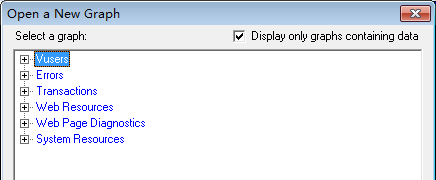
- 虚拟用户相关图表
- 错误相关图表
- 事务相关图表
- Web资源相关图表
- 网页诊断相关图表【Web项目关注 重点】
- 系统资源相关图表
提示：
1). 选中“Display only graphs containing data”：只显示有数据的图表;
2). 取消选中:蓝色字体代表有数据，黑色代表无数据；
3). 以上系列内，我们说几个比较常用的图表
一、 虚拟用户相关图表
1.1 Running Vusers（运行虚拟用户）【重要】
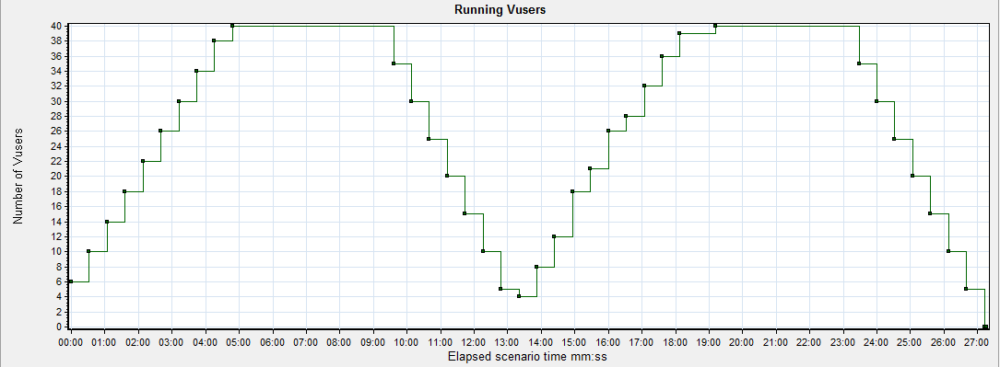
在运行期间虚拟的整体用户运行情况:
1. 横轴：为运行时间
2. 纵轴：显示处于运行状态的虚拟用户数
提示：Running Vusers与平均事务响应时间合并，直观体现用户数量对服务器处理事务产生的影响
二、 事务相关图表 【重要】
2.1 平均事务响应时间(Average Transaction Response Time) 【重要】
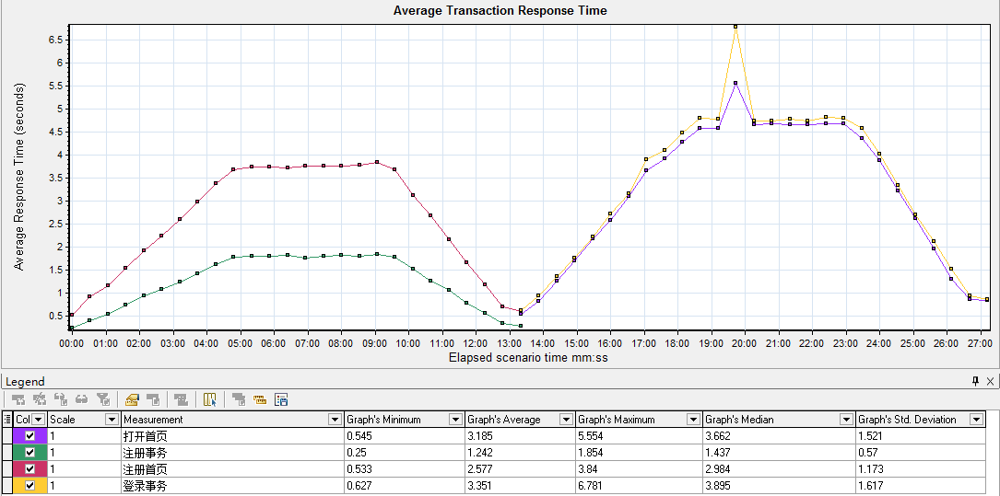
通过平均事务响应时间图表查看性能测试过程中每一秒用于执行事务的平均时间
2.2 每秒事务数(Transaction per Second) 图表
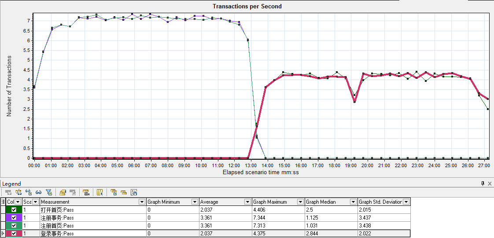
通过该图性能测试过程中每一秒内系统上的实际事务负载
2.3 每秒事务总数(Total Transactions per Second) 图表
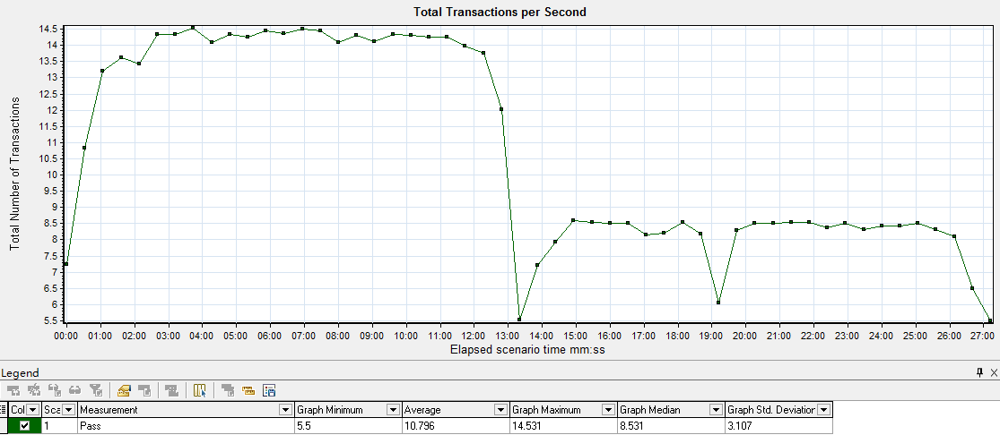
通过该图查看性能测试过程中每一秒内，成功通过事务总数、执行失败的事务总数和停止的事务总数
2.4 事务摘要(Transaction Summary)
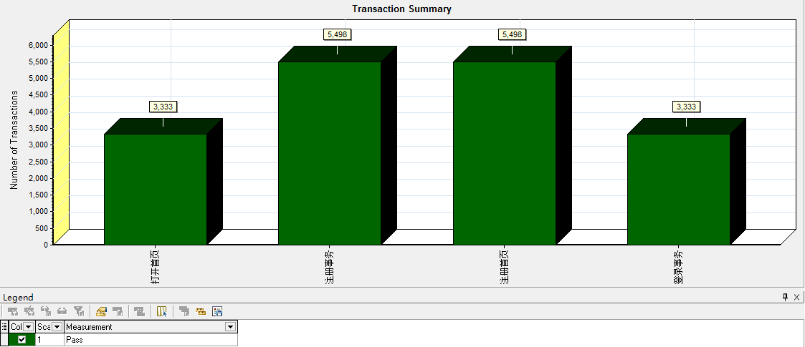
通过该图查看性能测试过程中执行失败、执行通过、停止和因错误而结束的事务概要信息
(业务成功率一般就是在事务摘要体现，摘要内如果事务都是通过，那么业务成功率就是100%)
2.5 事务性能摘要(Transaction Performance Summary) 图表
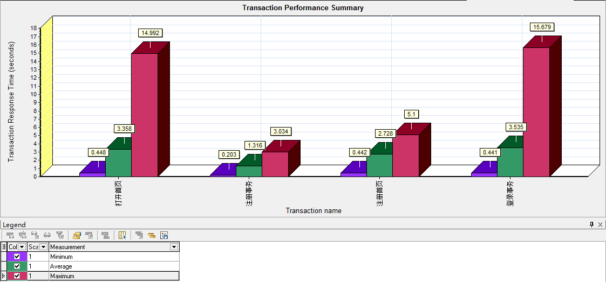
通过该图查看性能测试过程中所有事务的最小、最大和平均响应时间，以不同的颜色代替
2.6 负载下的事务响应时间表(Transaction Response Time Under Load) 【重点】
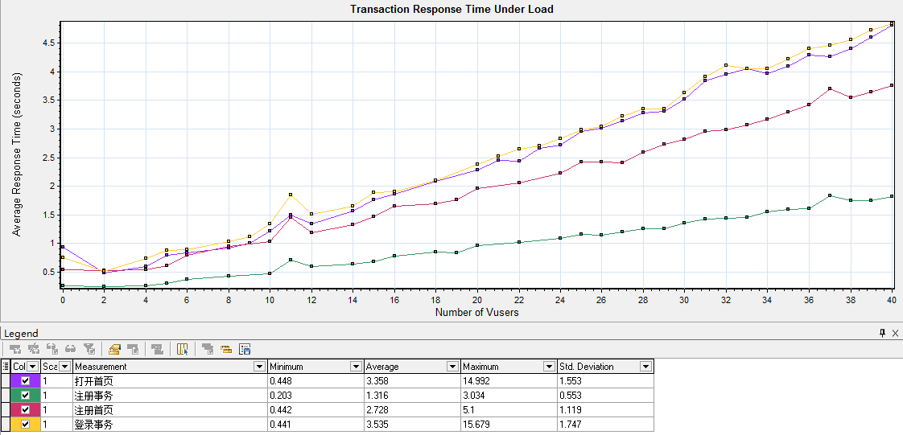
该图其实是事务响应时间图与虚拟运行用户图的组合，很直观体现随着虚拟用户的增加，对事务响应时间的影响
在做持续压力测试的时候，这张图最好使
2.7 事务响应时间(百分比)(Transaction Response Time (Percentile))
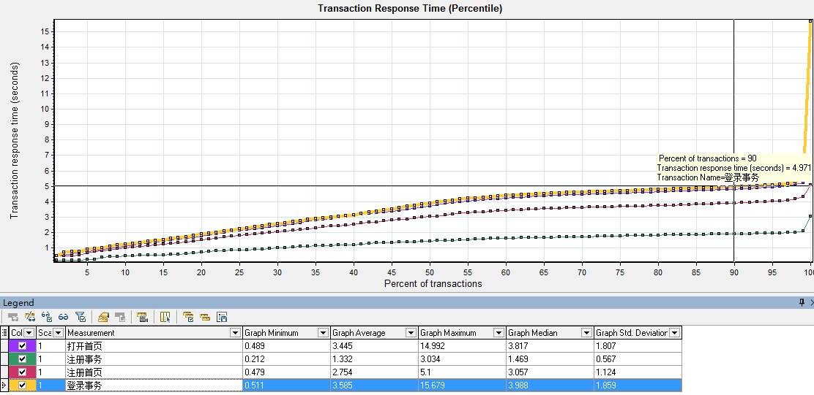
该图有助于确定事务响应时间是否符合需求所定义的性能指标百分比
(如：80人并发登录时候，90%用户登录业务时间小于3秒)
三、错误相关图表
在性能测试场景执行过程中，虚拟用户可能无法成功完成所有事务，可以通过错误相关图表查看相关错误信息
3.1 错误信息统计(按描述)(Error Statistics (by Description))
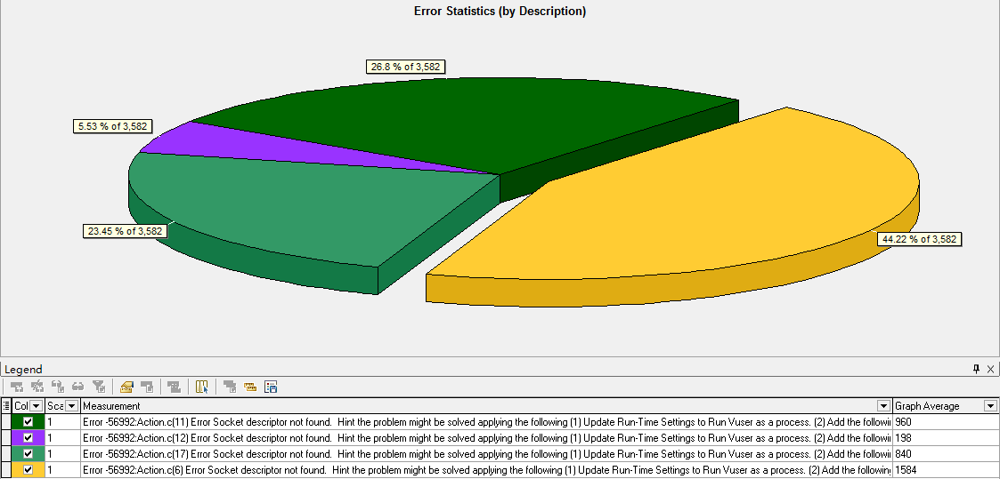
通过该图查看性能测试过程中发生的错误数(分组：按描述)，以上图相同错误代码，不同描述共5次错误总次数：3582次，不同的错误描述，占比不同
3.2 每秒错误数(Errors per Second)
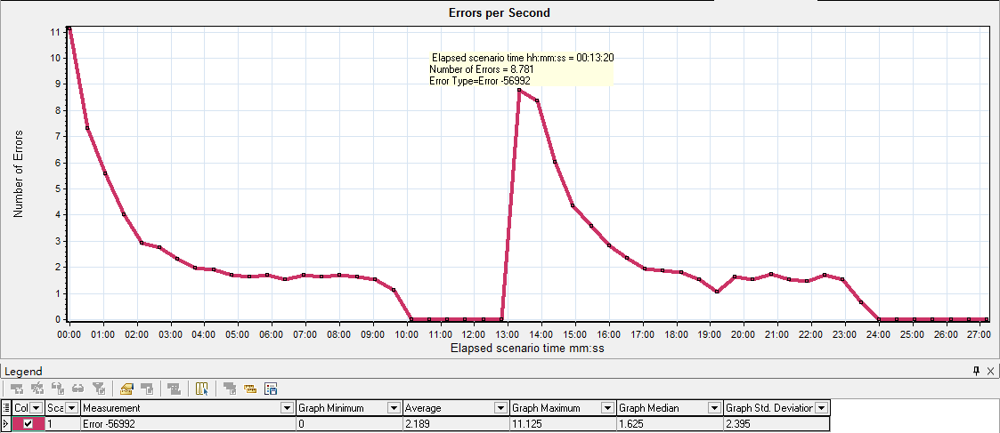
此图按代码分组，此图非常直观显示在场景运行时间中，不同错误类型，产生的错误数
四、Web资源相关图表
Web资源相关图表提供Web服务器性能相关信息
4.1 每秒点击数(Hits per Second) 图表
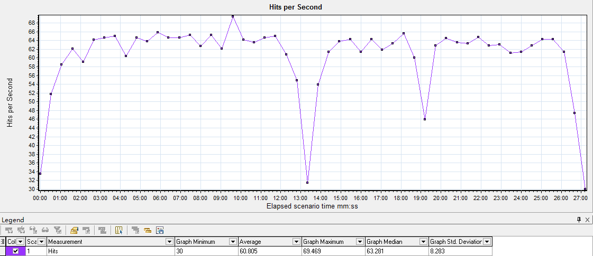
通过该图表查看性能测试中每秒内虚拟用户向Web服务器发送的HTTP请求数
提示：
1). 每秒点击数图表基本和HTTP Responses per Second(每秒响应数)一样；
(因为点击数数据其实就是通过服务器返回的响应数做统计的)
2). 该图表和平均事务响应时间合并，查看单击数据对事务性能的影响。
4.2 吞吐量(MB)(Throughput(MB)) 图表
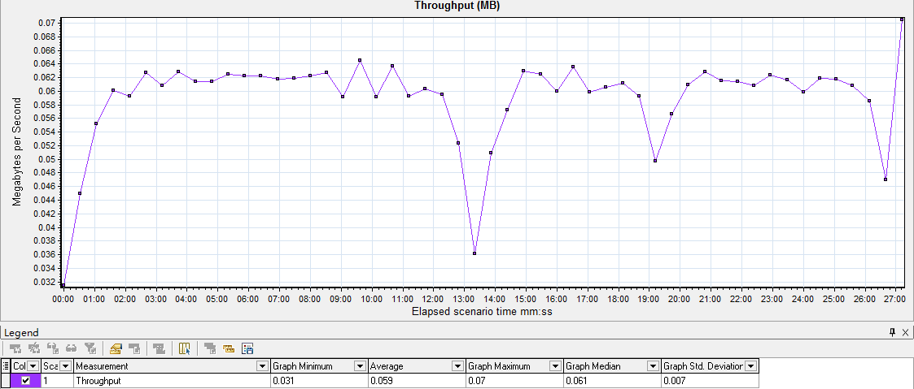
该图以兆字节为单位查看吞吐量
提示：该图与平均事务响应时间合并，查看吞吐量对事务性能的影响
五、Web网页诊断 相关图表
网页诊断图表提供每个页面的下载时间、下载过程出现的问题、页面内下载组件的大小等
5.1 网页分析诊断（Web Page Diagnostics）图表
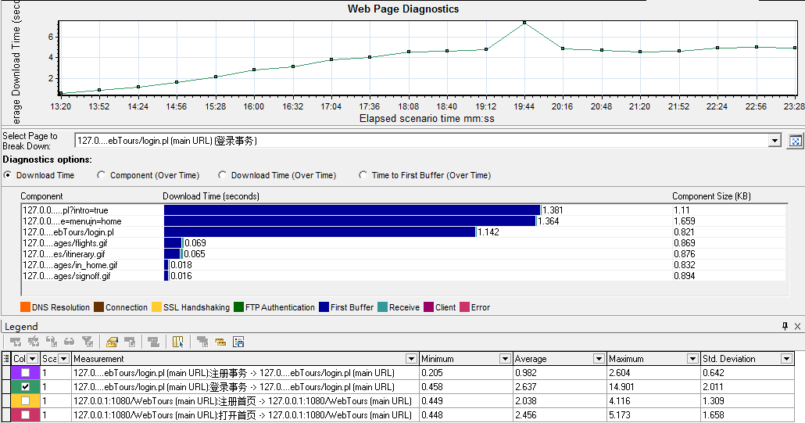
选择指定事务进行细分，如：登录事务，显示页面下载时间，页面内具体组件下载时间、大小
提示：
First Buffer（第一次缓冲时间）：从HTTP请求到收到Web服务器返回的第一次缓冲所经过的时间；
度量可以准确指示Web服务器延迟和网络延迟。
5.2 页面组件细分（Page Component Breakdown）图表
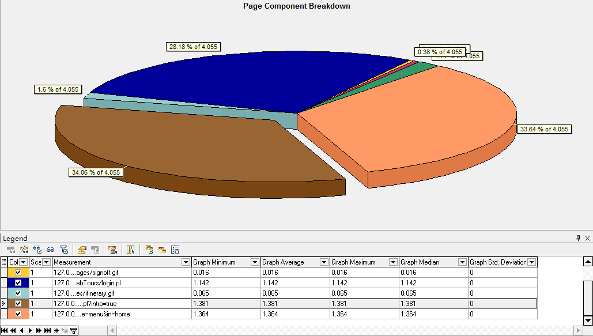
该图显示每个网页及组件的下载时间以及每个组件占用当前页面的下载时间的百分比
(通过此图很直观看出当前事务内下载资源占比情况)
5.3 页面下载时间细分（Page Download Time Breakdown）图表
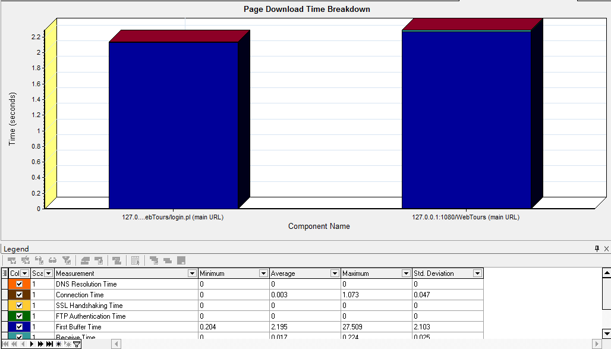
通过该图查看页面下载期间是网路原因还是服务器处理能力较差导致响应过慢:
1). DNS Resolution Time :DNS域名服务器解析域名所需时间
2). Connection Time:连接时间-客户端与应用服务器初次建立连接时间(度量网路及服务器是否响应请求)
3). SSL Handshaking Time:建立SSL(证书、秘钥)连接需要时间(度量HTTPS协议通信时使用)
4). FTP Authentication Time: FTP身份验证时间
5). First Buffer Time:第一次缓冲时间-第一次请求服务器到服务器返回第一次缓冲所需要时间(度量网络或服务器延迟)
6). Receive Time:接收时间-从开始接收到服务器传过来最后一个字符所需要时间
7). Client Time:客户端时间-客户端浏览器的延迟 导致请求在客户端延迟的平均时间
8). Error Time:错误时间-发送HTTP请求到返回错误信息所用的平均时间
5.4 第一次缓冲时间细分（Time to First Buffer Breakdown）图表
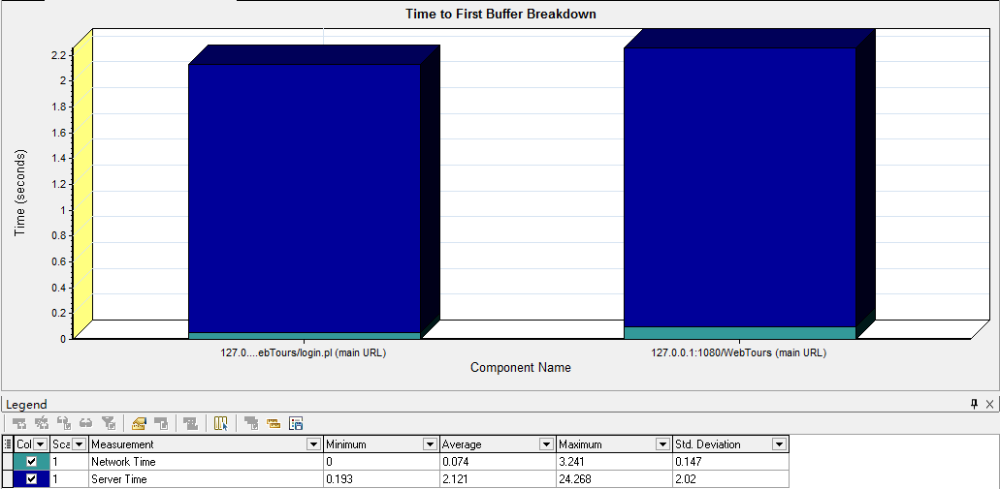
通过该图查看成功收到Web服务器返回的第一次缓冲之前的时间段内，每个网页组件的相对服务器时间、网络时间
提示：
1. 网路时间：客户端发出HTTP请求到服务器收到HTTP请求消息的平均时间；(网络传输请求的时间)
2. 服务器时间：服务器接收到请求开始到返回浏览器第一次缓冲所有的平均时间
注意：
第一次缓冲时间是在客户端进行计算的，所以是估计值(不太精准)
5.4 下载组件大小（KB）（Downloaded Component Size(KB)）图表
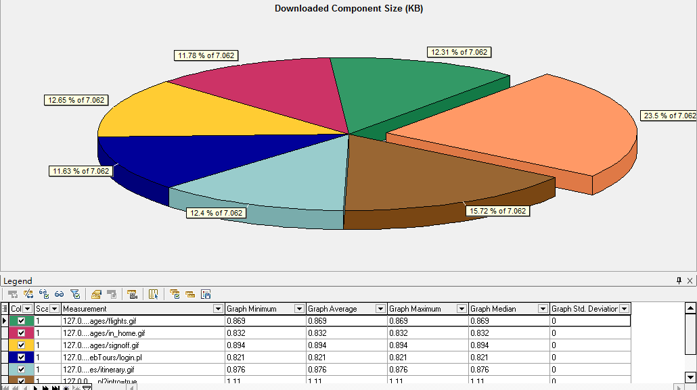
通过该图查看每个网页及其组件大小(KB)
六、系统资源相关图表
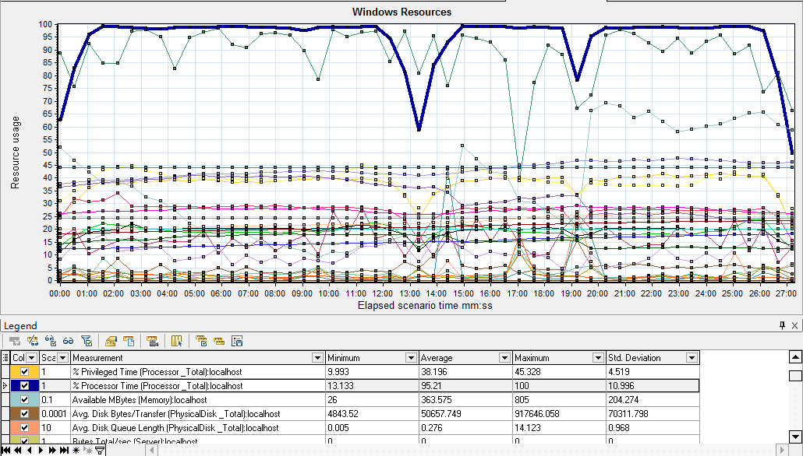
系统资源图表是在负载测试场景运行期间联机监控所监测的系统资源，通常需要对CPU利用率、内存和磁盘等进行监控
提示：
1. 系统资源标一般需要与虚拟运行用户、事务相关表进行合并，查看运行相应业务时资源利用率是否达标；
2. 在这里我们以windows Resources为例
6.1 CPU、内存、磁盘常用关注指标(CPU、内存、磁盘)
| 指标名称 | 含义 | 关注点 | 建议值 |
|---|---|---|---|
| % Processor Time | CPU利用率 | 1. CPU使用率峰值：最大值即为CPU的使用率峰值 2. CPU平均使用率：平均值为CPU的平均使用率 |
75%-85%之间；过低则CPU利用率不高，过高则CPU成为系统瓶颈 |
| Available MBytes(Memory) | 可用内存(MB) | 1. 内存占用率峰值(%) = (最大物理内存 - 最大空闲内存) / 最大物理内存 * 100% 2.内存平均使用率(%) = 最大物理内存 - 平均空闲内存数 / 最大物理内存 * 100% |
可用内存保留20%左右 |
| % Disk Time | 硬盘读写时间比 | 正常值小于10 | 此值过大表示耗费太多时间来访问磁盘，可以考虑增加内存，或更换更快的硬盘来进行优化 |
6.2 Windows Resources - Running Vusers
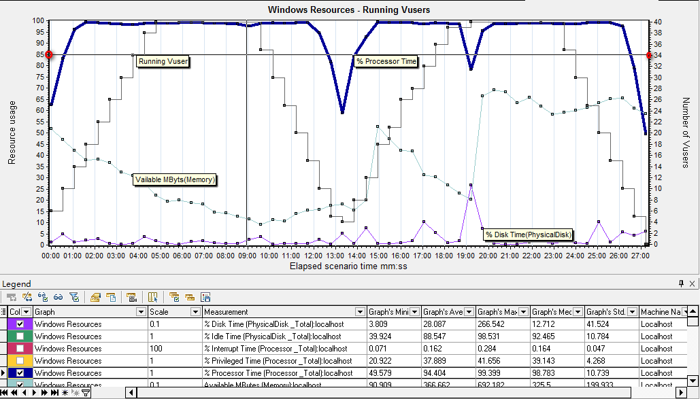
虚拟运行用户与Windows Resources表合并，查看运行用户数的增加对CPU、内存、磁盘等资源影响信息
分析：
虚拟用户达到34时CPU使用率以达到85%，CPU以出现瓶颈必须地进行CPU相关升级；
6.3 Windows Resources - Average Transaction Response Time
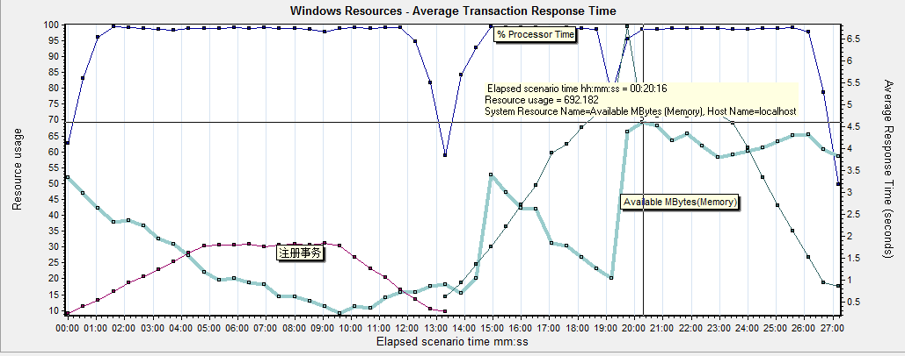
平均事务响应时间和CPU、内存合并图
分析：
从上图看出，40并发 登录事务最高使用内存70%，说明内存可用内存还有20%满足系统使用指标